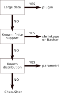

Choosing An Estimator
Shannon entropy estimation is sensitive to sample size and to how much is known about the support. The flowchart below is a compact decision aid for the estimators available in DiversityAndDissimilarity.

Start With The Question
First decide what the input represents:
- Ecological abundance data, such as counts per species in a plot, should be passed as a dictionary, an abundance vector, a community matrix, or a table of species columns. This is the default interpretation for numeric data.
- Raw observations, such as one species label per individual, should be passed as a non-numeric observation vector, or as a numeric observation vector with
frequencies=false. - Community matrices and Tables.jl-compatible tables are interpreted as samples/sites in rows and species/taxa in columns; estimators are applied row-wise.
Use Plugin when the sample is large enough that missing categories and finite-sample bias are not a practical concern. This is the direct empirical estimator:
julia> using DiversityAndDissimilarity
julia> assemblage = Dict(:oak => 12, :ash => 5, :elm => 3);
julia> entropy(Shannon(; estimator=Plugin()), assemblage)
1.3527241956246545
julia> shannon_diversity(assemblage; estimator=Plugin())
2.5539392274300625Use MillerMadow when you want a simple observed-support bias correction but do not want to assert a larger support size. This is most useful for moderately sized samples where missing species are not expected to dominate the uncertainty:
julia> entropy(Shannon(; estimator=MillerMadow()), assemblage)
1.4248589476691027
julia> shannon_diversity(assemblage; estimator=MillerMadow())
2.6848824916981373Use HausserStrimmer, Basharin, or AddGamma when the support is known and finite. Pass the known support as either an integer number of categories or a collection of category labels. This is the right branch of the flowchart labelled "Known, finite support".
For very large known supports, remember that some finite-support estimators scale with the supplied support size $K$ as well as the observed support $S$. support=K is compact, while a label collection also gives useful validation that all observed categories are members of the known support.
julia> entropy(Shannon(; estimator=HausserStrimmer()), assemblage; support=5)
1.644752056207856
julia> entropy(Shannon(; estimator=Basharin()), assemblage; support=5)
1.6412632038024473
julia> entropy(Shannon(; estimator=AddGamma(1)), assemblage; support=5)
1.7792365361682794When support labels are meaningful, pass them explicitly. This makes accidental support mismatches easier to catch:
julia> known_species = [:oak, :ash, :elm, :pine, :birch];
julia> entropy(Shannon(; estimator=AddGamma(1)), assemblage; support=known_species)
1.7792365361682794
julia> entropy(Shannon(; estimator=AddGamma(1)), assemblage; support=[:oak, :ash])
ERROR: ArgumentError: support must include every observed categoryUse ChaoShen when the true support is unknown and unseen categories may exist. This is the bottom branch of the flowchart and is often the most ecological choice when the sample has singletons and incomplete coverage.
julia> entropy(Shannon(; estimator=ChaoShen()), assemblage)
1.3708690075540944
julia> shannon_diversity(assemblage; estimator=ChaoShen())
2.5862630280745527The flowchart's "Known distribution" branch refers to parametric modelling: fit a distribution outside this package, then evaluate the entropy of its implied probabilities. If the probabilities are already known, pass them directly:
julia> probabilities = [0.6, 0.25, 0.15];
julia> entropy(Shannon(), probabilities)
1.3527241956246545Comparing Estimators
A practical way to test estimator sensitivity is to run several estimators on the same assemblage and compare both entropy and effective diversity:
julia> candidates = (
Shannon(; estimator=Plugin()),
Shannon(; estimator=MillerMadow()),
Shannon(; estimator=ChaoShen()),
);
julia> entropy.(candidates, Ref(assemblage))
(1.3527241956246545, 1.4248589476691027, 1.3708690075540944)
julia> effective_diversity.(candidates, Ref(assemblage))
(2.5539392274300625, 2.6848824916981373, 2.5862630280745527)For finite-support estimators, include the same support value in each call:
julia> finite_support_estimators = (
Shannon(; estimator=HausserStrimmer()),
Shannon(; estimator=Basharin()),
Shannon(; estimator=AddGamma(1)),
);
julia> [entropy(index, assemblage; support=5) for index in finite_support_estimators]
3-element Vector{Float64}:
1.644752056207856
1.6412632038024473
1.7792365361682794These are also ordinary Julia calls, so they can be put in tests for an analysis pipeline. For example:
using DiversityAndDissimilarity
using Test
@testset "Shannon estimator sensitivity" begin
assemblage = Dict(:oak => 12, :ash => 5, :elm => 3)
plugin = entropy(Shannon(; estimator=Plugin()), assemblage)
miller_madow = entropy(Shannon(; estimator=MillerMadow()), assemblage)
chao_shen = entropy(Shannon(; estimator=ChaoShen()), assemblage)
@test isfinite(plugin)
@test miller_madow >= plugin
@test isfinite(chao_shen)
finite_support = [
entropy(Shannon(; estimator=HausserStrimmer()), assemblage; support=5),
entropy(Shannon(; estimator=Basharin()), assemblage; support=5),
entropy(Shannon(; estimator=AddGamma(1)), assemblage; support=5),
]
@test all(isfinite, finite_support)
endUncertainty Commands
For estimators with analytic or approximate variance support, use entropy_variance, entropy_confint, or the Shannon-specific aliases:
julia> entropy_variance(Shannon(; estimator=Basharin()), assemblage; support=5)
0.036186188568009876
julia> entropy_confint(Shannon(; estimator=Basharin()), assemblage; support=5).stderr
0.19022667680430597
julia> shannon_confint(assemblage; estimator=ChaoShen()).estimate
1.3708690075540944For HausserStrimmer and AddGamma, or when you want a method check that does not rely on the analytic approximation, use bootstrap or jackknife:
bootstrap(Shannon(; estimator=AddGamma(1)), assemblage; support=5, nboot=1000)
jackknife(Shannon(; estimator=MillerMadow()), assemblage)
bootstrap(Shannon(), assemblage; quantity=:diversity)Resampling helpers require integer counts. For raw observations, pass the observations directly; for numeric observations, use frequencies=false. Bootstrap runtime grows roughly linearly with nboot; for large samples or community matrices, test the workflow with a small nboot before running final intervals.
Rule Of Thumb
- If sample coverage is high and the sample is large, start with
Plugin(). - If sample size is moderate and the observed support is a reasonable stand-in for the true support, compare against
MillerMadow(). - If the full finite support is known, compare
HausserStrimmer(),Basharin(), andAddGamma(gamma)with the samesupport; do not use these to imply unseen species outside that support. - If the support is unknown and unseen species are plausible, especially with ecological abundance data containing singletons, include
ChaoShen(). - If your input is raw observations, make sure it is treated as observations rather than an abundance vector by using
frequencies=falsefor numeric labels. - If a parametric distribution is scientifically justified, fit it separately and pass the implied probabilities to
entropy(Shannon(), probabilities).